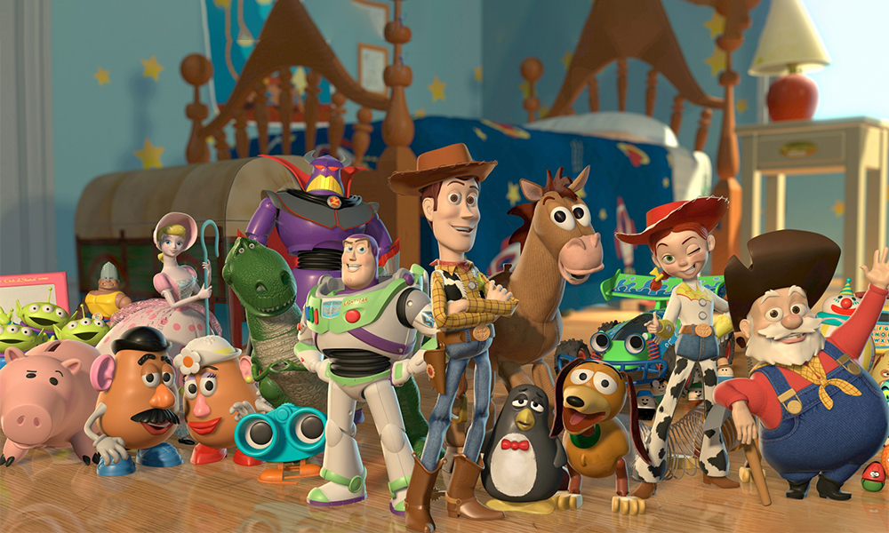

살아 있는 장난감들의 우정과 모험담을 그린 이 작품은 평단과 관객 모두를 매료시킨 세계적인 흥행작이며,
디즈니의 2D 장편을 정점으로 한
애니메이션계의 판도를 바꾼 픽사의 출세작이다. 스타들이 더빙에 참여해 화제가 되었고,
CG에 대한 고정관념과 달리 인간미 넘치는 정교한
묘사와 탄탄한 스토리로 3D 애니메이션의 새로운 시대를 열었다.
‘아이들에게 버려지는 장난감들의 운명과 근심’이라는 주제 안에서 우정과
신의, 정체성의 문제들을
건드림으로써 애니메이션은 꼭 어린이의 전유물이라는 편견을 뛰어넘었고 흥행 스코어를 깬 첫 번째 기록을 세웠다.